Chapter 6 Resampling Methods
In this section we discuss two resampling methods: cross-validation and the bootstrap.
Resampling
- Repeatedly drawing samples from a training sample
- Refitting a model in each sample to obtain additional information of the fitted model.
- Variability of the estimated coefficients.
- More accurate and robust standard errors.
- Prediction errors (MSE)
Two most commonly methods are cross-validation and bootstrap.
These both can be utilized in
- Model assessment.
- The process of evaluating model performance.
- Model selection.
- Process of selection the proper level of flexibility for a model.
- Process of selection the proper level of flexibility for a model.
- Model assessment.
Training Error versus Test error
- Test error rate
- The test error rate is the average error rate that results from using a statistical learning method to predict the response on a new observation, one that was not used in training the method.
- Training error rate
- The training error rate can be easily calculated by applying the statistical learning method to the observations used in its training data.
- The training error rate often is quite different from the test error rate, and in particular the former can dramatically underestimate the latter.
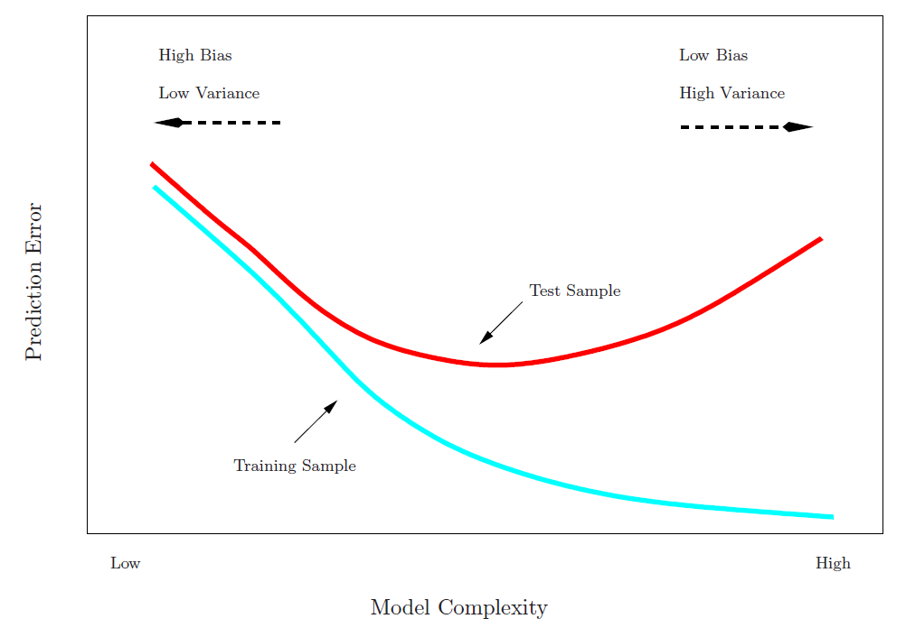
- Best solution: a large designated test set.
- Often not available.
- Some methods make a mathematical adjustment to the training error rate in order to estimate the test error rate.
- These include the \(C_p\) statistic, AIC and BIC
- In the absence of test set that can be used to directly estimate the error rate, cross-validation approaches estimate the test error rate by holding out a randomly selected subset of the training set and estimate the rates from the held out observations.
6.1 Validation Set Approach
Here we randomly divide the available set of samples into two parts: a training set and a validation or hold-out set.
The model is fit on the training set, and the fitted model is used to predict the responses for the observations in the validation set.
The resulting validation-set error provides an estimate of the test error.
- This is typically assessed using MSE in the case of a quantitative response and misclassification rate in the case of a qualitative (discrete) response.
A random splitting into two halves: left part is training set, right part is validation set.
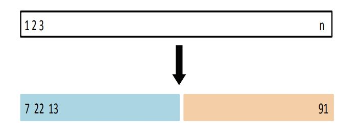
(Source James et al. (2013), Fig 5.2)
Example: automobile data
Want to compare linear vs higher-order polynomial terms in a linear regression.
We randomly split the 392 observations into two sets, a training set containing 196 of the data points, and a validation set containing the remaining 196 observations.
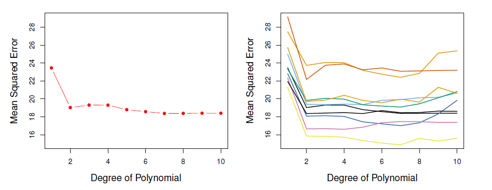
Left panel shows single split; right panel shows multiple splits.
Issues
- Validation estimate of the test error (like MSE) can be highly variable, depending on precisely which observations are included in the training set and which one in the validation set.
- In the validation approach, only a subset of the observations - those that are included in the training set rather than in the validation set - are used to fit the model.
- This suggests that the validation set error may tend to overestimate the test error for the model fit on the entire data set.
6.2 K-fold Cross-validation
Widely used approach for estimating test error.
Estimates can be used to select best model, and to give an idea of the test error of the final chosen model.
Idea is to randomly divide the data into \(K\) equal-sized parts.
- We leave out part \(k\), fit the model to the other \(K-1\) parts (combined), and then obtain predictions for the left-out \(k\)th part.
This is done in turn for each part \(k=1,2, \ldots, K\), and then the results are combined.
Devide data into \(K\) roughly equal-sized parts (\(K=5\) here)
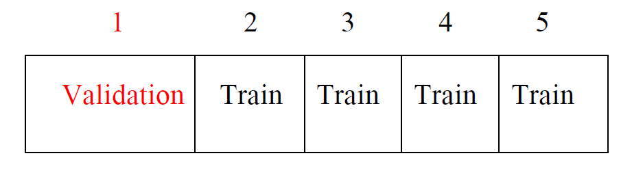
- Randomly divide \(n\) observations into \(K\) groups, or folds, of approximately equal size, treat the first fold as a validation set, fit the model on each of the ramaining \(K-1\) folds at a time, compute \(MSE_k\), \(k=1,\ldots, K\), and
\[ CV_K=\frac{1}{K}\sum_{k=1}^K MSE_k \]
is the \(k\)-fold approach to estimate the test MSE.
Other approach
- Let the \(K\) parts be \(C_1, C2, \ldots, C_K\), where \(C_k\) denotes the indices of the observations in part \(k\).
- There are \(n_k\) observations in part \(k\): if \(N\) is a multiple of \(K\), then \(n_k=n/K\).
- Compute
\[ CV_k=\sum_{k=1}^K\frac{n_k}{n}MSE_k \]
where \(MSE_k=\sum_{i \in C_k}(y_i-\hat{y}_i)^2/n_k\), and \(\hat{y}_i\) is the fit for observation \(i\), obtained from the data with part \(k\) removed.
- Setting \(K=n\) yields \(n\)-fold or leave-one out cross-validation (LOOCV).
Leave-one-out cross-validation (LOOCV)
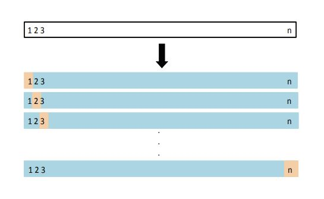
(Source James et al. (2013), Fig 5.3)
Leave out each observation at a time, estimate the model \(n\) times from each of remaining \(n-1\) observation, compute \(MSE_i=(Y_i-\hat{Y}_{(i)})^2\), where \(\hat{Y}_{(i)}\) is estimated from the sample without the \(i\)th observation.
With least-squares linear or polynomial regression, an amazing shortcut makes the cost of LOOCV the same as that of a single model fit!
The following formula holds:
\[ CV_n = \frac{1}{n}\sum_{i=1}^n MSE_i = \frac{1}{n}\sum_{i=1}^n (y_i-\hat{y}_{(i)})^2 \]
- For OLS regression it can be shown that
\[ CV_n = \frac{1}{n}\sum_{i=1}^n (\frac{y_i-\hat{y}_{(i)}}{1-h_i})^2 \]
where \(h_i=x_i^T(X^TX)^{-1}x_i\) is the leverage of the \(i\)th observation and \(\hat{Y}_i\) is the fitted value (prediction) of the full sample regression.
- LOOCV sometimes useful, but typically doesn’t shake up the data enough.
- The estimates from each fold are highly correlated and hence their average can have high variance.
- Typical (or better) choice is \(k=5\) or \(10\).
Auto data example
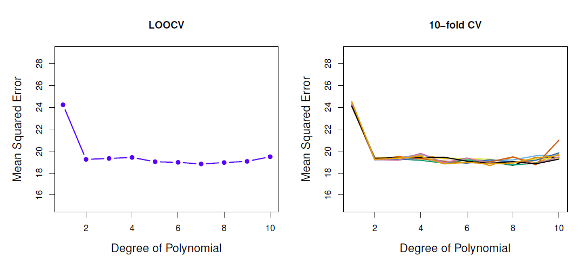
- True and estimated test MSE for the simulated data
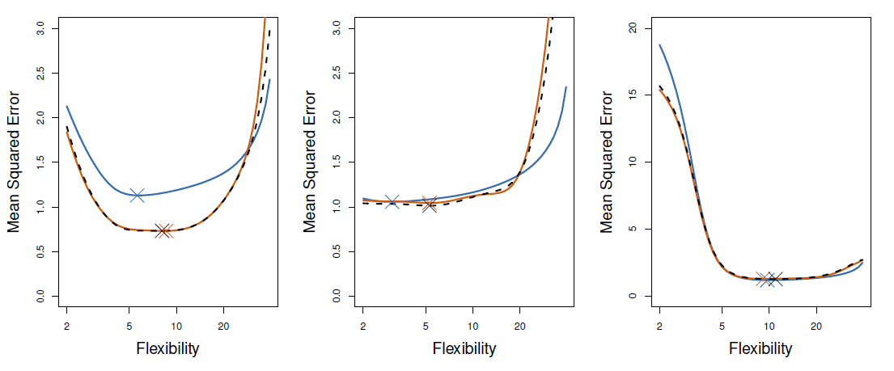
- True test MSE: blue, LOOCV: black, 10-fold CV: orange
Bias-variance trade-off
- Recall
\[ MSE=Var(est. error)+(bias)^2 +Var(irreducible\_error) \]
- The population MSE is the true test error (which remains unknown in practice).
- Mostly the major interest is not in the true test error as such, rather the interest is in the correct degree of flexibility of the specified model which is determined by the minimum of the test set MSE (test error).
- However if the interest is in the test error as such, the question reduces to the bias-variance trade-off stemming from \(var(est.error)+(bias)^2\) in the MSE.
- It turns out that \(k\)-fold CV often gives loser error rates than LOOCV.
- It has been empirically observed that selecting \(k\) suitably (usually 5 or 10), \(k\)-fold CV tends balance better bias and variance than LOOCV.
Cross-validation in classification
Cross-validation works in classification in the same manner as in regression with the exception that MSE is replaced by the misclassification rate.
For example in LOOCV
\[ CV_n = \frac{1}{n}\sum_{i=1}^n I(Y_i\ne \hat{Y}_{(i)}) \]
where \(\hat{Y}_i{(i)}\) is the predicted class by the model estimated without the \(i\)th observation.
In the same fashion, using CV approaches one can select the optimal value for \(K\).
We divide the data into \(K\) roughly equal-sized parts \(C_1, C2, \ldots, C_K\), where \(C_k\) denotes the indices of the observations in part \(k\).
- There are \(n_k\) observations in part \(k\): if \(N\) is a multiple of \(K\), then \(n_k=n/K\).
Compute
\[ CV_K=\frac{1}{K} \sum_{k=1}^K Err_k \]
where \(Err_k=\sum_{i \in C_k}I(y_i \ne \hat{y}_i)/n_k\)
- The estimated standard deviation of \(CV_K\) is
\[ \hat{SE}(CV_K)=\sqrt{\frac{1}{K}\sum_{k=1}^K\frac{(Err_k-\bar{Err_k)^2}}{K-1}} \]
- This is a useful estimate, but strictly speaking, not quite valid.
Cross-validation: right and wrong
- Consider a simple classifier applied to some two-class data:
Starting with 5000 peredictors and 50 samples, find the 100 predictors having the largest correlation with the classs labels.
We then apply a classifier such as logistic regression, using only these 100 predictors.
How do we estimate the test set performance of this classifier?
Can we apply cross-validation in step 2, forgetting about step 1?
This would ignore the fact that in Step 1, the procedure has already seen the labels of the training data, and made use of them.
- This is a form of training and must be included in the validation process.
It is easy to simulate realistic data with the class labels independent of the outcome, so that true test error=50%, but the CV error estimate that ignores Step 1 is zero!
We have seen this error made in many high profile genomics papers.
Wrong: Apply cross-validation in step 2.
Right: Apply cross-validation to steps 1 and 2.
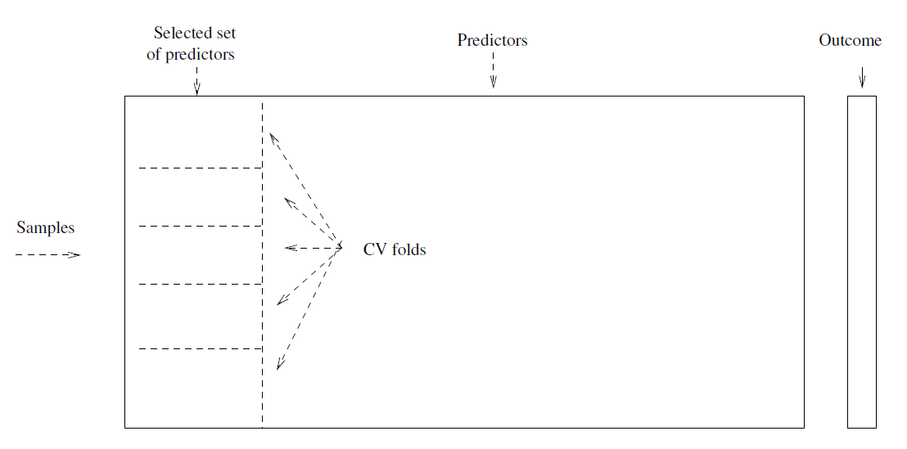
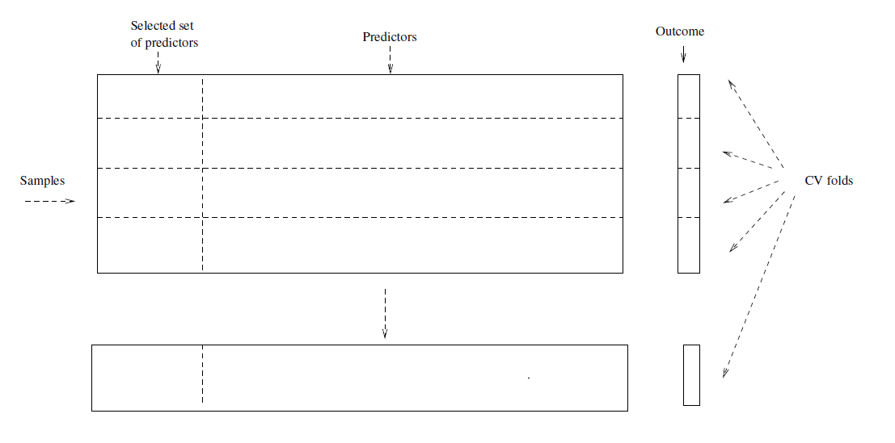
6.2.1 Example
- In the following examples we utilize the Auto data set available in the ISLR2 package.
library(ISLR2) # load ISLR package
head(Auto)## mpg cylinders displacement horsepower weight acceleration year origin
## 1 18 8 307 130 3504 12.0 70 1
## 2 15 8 350 165 3693 11.5 70 1
## 3 18 8 318 150 3436 11.0 70 1
## 4 16 8 304 150 3433 12.0 70 1
## 5 17 8 302 140 3449 10.5 70 1
## 6 15 8 429 198 4341 10.0 70 1
## name
## 1 chevrolet chevelle malibu
## 2 buick skylark 320
## 3 plymouth satellite
## 4 amc rebel sst
## 5 ford torino
## 6 ford galaxie 500tail(Auto)## mpg cylinders displacement horsepower weight acceleration year origin
## 392 27 4 151 90 2950 17.3 82 1
## 393 27 4 140 86 2790 15.6 82 1
## 394 44 4 97 52 2130 24.6 82 2
## 395 32 4 135 84 2295 11.6 82 1
## 396 28 4 120 79 2625 18.6 82 1
## 397 31 4 119 82 2720 19.4 82 1
## name
## 392 chevrolet camaro
## 393 ford mustang gl
## 394 vw pickup
## 395 dodge rampage
## 396 ford ranger
## 397 chevy s-10nrow(Auto) # display the number of obsevations## [1] 392- The interest is the consumption measured by mileage per gallon (mpg) (miles covered per gallon) as a function of just the horse power (for simplicity).
Validation set approach
set.seed(1) # to allow replicate the results exactly
train <- sample(x = 392, size = 196) # see help(sample)
##
## fit simple linear regression, save results into object lm.fit, and print summary
summary(lm.fit <- lm(mpg ~ horsepower, data = Auto, subset = train)) # lm.fit contains results##
## Call:
## lm(formula = mpg ~ horsepower, data = Auto, subset = train)
##
## Residuals:
## Min 1Q Median 3Q Max
## -9.3177 -3.5428 -0.5591 2.3910 14.6836
##
## Coefficients:
## Estimate Std. Error t value Pr(>|t|)
## (Intercept) 41.283548 1.044352 39.53 <2e-16 ***
## horsepower -0.169659 0.009556 -17.75 <2e-16 ***
## ---
## Signif. codes: 0 '***' 0.001 '**' 0.01 '*' 0.05 '.' 0.1 ' ' 1
##
## Residual standard error: 5.032 on 194 degrees of freedom
## Multiple R-squared: 0.619, Adjusted R-squared: 0.6171
## F-statistic: 315.2 on 1 and 194 DF, p-value: < 2.2e-16## prediction MSE
round(mean((Auto$mpg - predict(lm.fit, newdata = Auto))[-train]^2), 2) # validation set (-train selects these) MSE## [1] 23.27##
## second order polynomial regression y = a + b x + c x^2 + e
summary(lm.fit2 <- lm(mpg ~ poly(x = horsepower, 2), data = Auto, subset = train)) # quadratic##
## Call:
## lm(formula = mpg ~ poly(x = horsepower, 2), data = Auto, subset = train)
##
## Residuals:
## Min 1Q Median 3Q Max
## -12.8711 -2.6655 -0.0096 2.0806 16.1063
##
## Coefficients:
## Estimate Std. Error t value Pr(>|t|)
## (Intercept) 23.5496 0.3175 74.182 < 2e-16 ***
## poly(x = horsepower, 2)1 -123.5881 6.4587 -19.135 < 2e-16 ***
## poly(x = horsepower, 2)2 47.7189 6.3613 7.501 2.25e-12 ***
## ---
## Signif. codes: 0 '***' 0.001 '**' 0.01 '*' 0.05 '.' 0.1 ' ' 1
##
## Residual standard error: 4.439 on 193 degrees of freedom
## Multiple R-squared: 0.705, Adjusted R-squared: 0.702
## F-statistic: 230.6 on 2 and 193 DF, p-value: < 2.2e-16##
round(mean((Auto$mpg - predict(lm.fit2, newdata = Auto))[-train]^2), 2) # validation set MSE## [1] 18.72## third order
summary(lm.fit3 <- lm(mpg ~ poly(x = horsepower, 3), data = Auto, subset = train)) # cubic##
## Call:
## lm(formula = mpg ~ poly(x = horsepower, 3), data = Auto, subset = train)
##
## Residuals:
## Min 1Q Median 3Q Max
## -12.6625 -2.7108 0.0805 2.0724 16.1378
##
## Coefficients:
## Estimate Std. Error t value Pr(>|t|)
## (Intercept) 23.5527 0.3185 73.946 < 2e-16 ***
## poly(x = horsepower, 3)1 -123.6143 6.4755 -19.089 < 2e-16 ***
## poly(x = horsepower, 3)2 47.8284 6.3935 7.481 2.58e-12 ***
## poly(x = horsepower, 3)3 1.3825 5.8107 0.238 0.812
## ---
## Signif. codes: 0 '***' 0.001 '**' 0.01 '*' 0.05 '.' 0.1 ' ' 1
##
## Residual standard error: 4.45 on 192 degrees of freedom
## Multiple R-squared: 0.7051, Adjusted R-squared: 0.7005
## F-statistic: 153 on 3 and 192 DF, p-value: < 2.2e-16##
round(mean((Auto$mpg - predict(lm.fit3, newdata = Auto))[-train]^2), 2) # validation set MSE## [1] 18.79- MSE for the second order polynomial reduces down to 18.72, for the third order model it is 18.79, i.e., no material improvement from the second order model.
- If we choose a different training set, these numbers change.
set.seed(2) # to allow replicate the results exactly
train <- sample(x = 392, size = 196) # see help(sample)
##
## fit simple linear regression, save results into object lm.fit, and print summary
lm.fit <- lm(mpg ~ horsepower, data = Auto, subset = train)
##
## prediction MSE
round(mean((Auto$mpg - predict(lm.fit, newdata = Auto))[-train]^2), 2) # validation set (-train selects these) MSE## [1] 25.73##
## second order polynomial regression y = a + b x + c x^2 + e
lm.fit2 <- lm(mpg ~ poly(x = horsepower, 2), data = Auto, subset = train) # qyuadratic
##
round(mean((Auto$mpg - predict(lm.fit2, newdata = Auto))[-train]^2), 2) # validation set MSE## [1] 20.43## third order
lm.fit3 <- lm(mpg ~ poly(x = horsepower, 3), data = Auto, subset = train) # cubic
##
round(mean((Auto$mpg - predict(lm.fit3, newdata = Auto))[-train]^2), 2) # validation set MSE## [1] 20.39- The results are qualitatively similar and support the quadratic function of horsepower.
LOOCV
Leave-one-out cross-validation can be worked out by cv.glm() function available in the boot package, see help (cv.glm).
In glm() the default family is gaussian which results to the same estimation results as lm().
coef(glm.fit <- glm(mpg ~ horsepower, data = Auto)) # estimate and show coefficients## (Intercept) horsepower
## 39.9358610 -0.1578447library(boot) #
cv.err <- cv.glm(data = Auto, glmfit = glm.fit)
## cross-validation error, the second number is a bias corrected version,
## here they are in two decimal places the same
round(cv.err$delta, digits = 2) ## [1] 24.23 24.23LOOCV estimate for the test MSE of the linear model is 24.23 (compared to 26.14 of the validation set).
Next we repeat cv.glm() for regressions up to 5th order polynomial.
cv.errv <- double(5) # initialize a vector of length 5
for (i in 1:5) {
gfit <- glm(mpg ~ poly(horsepower, i), data = Auto)
cv.errv[i] <- cv.glm(data = Auto, glmfit = gfit)$delta[1]
} # end for
round(cv.errv, digits = 2) # show results## [1] 24.23 19.25 19.33 19.42 19.03- Sharp drop in the estimated test MSE after the linear fit, but then no clear improvement.
\(K\)-fold CV
- The cv.glm() function can be used for \(K\)-fold CV by setting argument \(K\) in the function call equal to 10 (default is \(n\), the number of observations which results to LOOCV).
set.seed(17) # to replicate results
## as in previous example, fit polynomial regression,
## but here up to order 10, and set k = 10 also.
cv.err10 <- double(10) # initialize error vector
for (i in 1:10) {
gfit <- glm(mpg ~ poly(horsepower, i), data = Auto)
cv.err10[i] <- cv.glm(data = Auto, glmfit = gfit, K = 10)$delta[1]
} # end for
round(cv.err10, digits = 2)## [1] 24.27 19.27 19.35 19.29 19.03 18.90 19.12 19.15 18.87 20.96- Again, no material improvement after the quadratic model.
6.3 Bootstrap
The bootstrap approach is extremely powerful statistical tool that can be used to estimate standard errors and other model precision statistics (generally uncertainty) of a fitted model.
The bootstrap is a flexible and powerful statistical tool that can be used to quantify the uncertainty associated with a given estimator or statistical learning method.
- For example, it can provide an estimate of the standard error of a coefficient, or a confidence interval for that coefficient.
In particular the power is in cases where analytic form of the standard errors is difficult to derive.
The use of the term bootstrap derives from the phrase to pull oneself up by one’s bootstraps, widely thought to be based on one of the eighteenth century “The Surprising Adventures of Baron Munchausen” by Rudolph Erich Raspe:
- The Baron had fallen to the bottom of a deep lake. Just when it looked like all was lost, he thought to pick himself up by his own bootstraps.
It is not the same as the term “bootstrap” used in computer science meaning to “boot” a computer from a set of core instruction, though the derivation is similar.
Simple example
Suppose that we wish to invest a fixed sum of meney in two financial assets that yield teturns of \(X\) and \(Y\), respectively, where \(X\) and \(Y\) are random quantities.
We will invest a fraction \(\alpha\) of our money in \(X\), and will invest the remaining \(1-\alpha\) in \(Y\).
We wish to choose \(\alpha\) to minimize the total risk, or variance, of our investment. In other words, we want to minimize \(Var(\alpha X+(1-\alpha)Y)\).
One can show that the value that minimized the risk is given by
\[ \alpha=\frac{\sigma_Y^2 - \sigma_{XY}}{\sigma_X^2 +\sigma_Y^2 -2\sigma_{XY}} \]
\(\sigma_X^2=Var(X)\), \(\sigma_Y^2=Var(Y)\), and \(\sigma_{XY}=Cov(X,Y)\).
But the values of \(\sigma_X^2\), \(\Sigma_Y^2\), and \(\sigma_{XY}\) are unknown.
We can compute estimates for these quantities, \(\hat{\sigma}_X^2\), \(\hat{\Sigma}_Y^2\), and \(\hat{\sigma}_{XY}\), using a data set that contains measurements for \(X\) and \(Y\).
We can then estimate the value of \(\alpha\) that minimized the variance of our investment using
\[ \hat{\alpha}=\frac{\hat{\sigma}_Y^2 - \hat{\sigma}_{XY}}{\hat{\sigma}_X^2 +\hat{\sigma}_Y^2 -2\hat{\sigma}_{XY}} \]
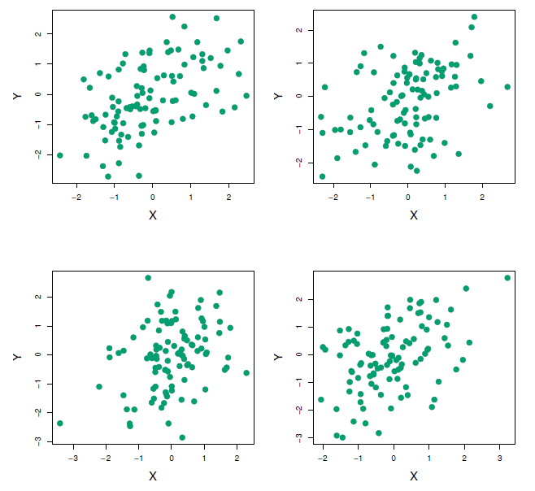
Each panel displays 100 simulated returns for investments \(X\) and \(Y\). From left to right and top to bottom, the resulting estimates for \(\alpha\) are 0.576, 0.532, 0.657, and 0.651.
To estimate the standard deviation of \(\hat{\alpha}\), we repeated the process of simulating 100 paired observatins of \(X\) and \(Y\), and estimating \(\alpha\) 1,000 times.
We thereby obtained 1,000 estimates for \(\alpha\), which we can call \(\hat{\alpha}_1, \hat{\alpha}_2, \ldots , \hat{\alpha}_{1000}\).
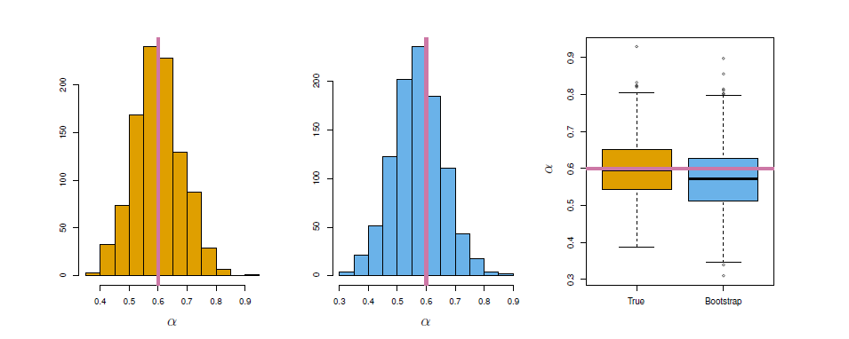
Left: A histogram of the estimates of \(\alpha\) obtained by generating 1,000 simulated data sets from the true population. Center: A histogram of the estimates of \(\alpha\) obtained from 1,000 bootstrap samples from a single data set. Right: The estimates of \(\alpha\) displayed in the left and center panels are shown as boxplots. In each panel, the pink line indicatees the true value of \(\alpha\).
The left-hand panel of the Figure displays a histogram of the resulting estimates.
For these simulations the parameters were set to \(\sigma_X^2=1\), \(\sigma_Y^2=1.25\), and \(\sigma_{XY}=0.5\), and so we know that the true value of \(\alpha\) is 0.6 (indicated by the red line).
The mean over all 1,000 estimates for \(\alpha\) is
\[ \bar{\alpha}=\frac{1}{1000}\sum_{r=1}^{1000} \hat{\alpha}_r=0.5996 \]
very close to \(\alpha=0.6\), and the standard deviation of the estimates is
\[ \sqrt{\frac{1}{1000-1}\sum_{r=1}^{1000} (\hat{\alpha}_r-\bar{\alpha})^2}=0.083 \]
This gives us a very good idea of the accuracy of \(\hat{\alpha}\): \(SE(\hat{\alpha})\approx 0.083\).
So roughly speaking, for a random sample from the population, we would expect \(\hat{\alpha}\) to differ from \(\alpha\) by approximately 0.08, on average.
The procedure outlined above cannot be applied, because for read data we cannot generate new samples from the original population.
However, the bootstrap approach allows us to use a computer to mimic the process of obtaining new data sets, so that we can estimate the variability of our estimate without generating additional samples.
Rather than repeatedly obtaining independent data sets from the population, we instead obtain distinct data sets by repeatedly sampling observations from the original data wet with replacement.
Each of these “bootstrap data sets” is created by sampling with replacement, and is the same size as our original data set. As a result some observations may appear more than once in a given bootstrap data set and some not at all.
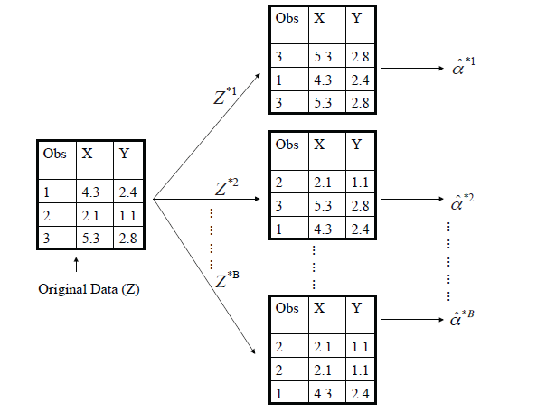
A graphical illustration of the bootstrap approach on a small sample containing \(n=3\) observations.
- Each bootstrap data set contains \(n\) observations, sampled with replacement from the original data set.
- Each bootstrap data set is used to obtain an estimate of \(\alpha\).
Denoting the first bootstrap data set by \(Z^{*1}\), we use \(Z^{*1}\) to produce a new bootstrap estimate for \(\alpha\), which we call \(\hat{\alpha}^{*1}\).
This procedure is repeated \(B\) times for some large value of \(B\) (say 100 or 1000), in order to produce \(B\) different bootstrap data sets, \(Z^{*1}, Z^{*2}, \ldots, Z^{*B}\), and \(B\) corresponding \(\alpha\) estimates, \(\hat{\alpha}^{*1}, \hat{\alpha}^{*2}, \ldots, \hat{\alpha}^{*B}\).
We estimate the standard error of these bootstrap estimates using the formula
\[ SE_B(\hat{\alpha}) = \sqrt{\frac{1}{B-1} \sum_{b=1}^{B} (\hat {\alpha}^{*r}- \bar{\hat{\alpha}}^*)^2 } \]
- This serves as an estimate of the standard error of \(\hat{\alpha}\) estimated from the original data set.
- See center and right panels of Figure above. Bootstrap results are in blue. For this example \(SE_B(\hat{\alpha})=0.087\)
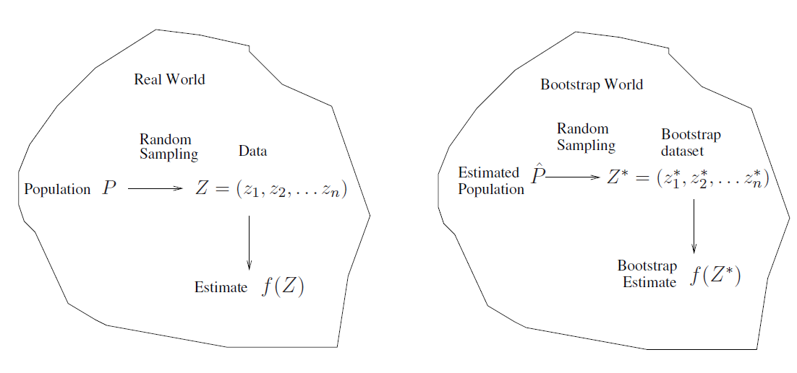
In more complex data situations, figuring out the appropriate way to generate bootstrap samples can require some thought.
For example, if the data is a time series, we can’t simply sample the observations with replacement.
We can instead create blocks of consecutive observations, and sample those with replacements. Then we paste together sample blocks to obtain a bootstrap data set.
Primarily used to obtain standard errors of an estimate.
Also provides approximate confidence intervals for a population parameter.
- For example, looking at the histogram in the middle panel of the Figure above, the 5% and 95% quantiles of the 1000 values is (0.43, 0.72).
- This represents an approximate 90% confidence interval for the true \(\alpha\)
- How do we interpret this confidence interval?
The above interval is called a Bootstrap Percentile confidence interval.
- It is the simplest method (among many approaches) for obtaining a confidence interval from the bootstrap.
Can the bootstrap estimate prediction error?
In cross-validation, each of the \(K\) validation folds is distinctfrom the other \(K-1\) folds used for training: there is no overlap.
- This is crucial for its success.
To estimate prediction error using the bootstrap, we could think about using each bootstrap data set as our training sample, and the original sample as our validation sample.
But each bootstrap sample has significant overlap with the original data.
- About two-thirds of the original data points appear in each bootstrap sample.
This will cause the bootstrap to seriously underestimate the true prediction error.
The other way around - with original sample = training sample, bootstrap data set = validation sample - is worse!
Can partly fix this problem by only using predictions for those observations that did not (by chance) occur in the current bootstrap sample.
But the method gets complicated, and in the end, cross-validation provides a simpler, more attractive approach for estimating prediction error.
In microarray and other genomic studies, an important problem is to compare a predictor of disease outcome derived from a large number of “biomarkers” to standard clinical predictors.
Comparing them on the same data set that was used to derive the biomarker predictor can lead to results strongly biased in favor of the biomarker predictor.
Pre-validation can be used to make a fairer comparison between the two sets of predictors.
Motivating example
- An example of this problem arose in the paper of van’t Veer et al. Nature (2002).
- The microarray data has 4918 genes measured over 78 cases, taken from a study of breast cancer.
- There are 44 cases in the good prognosis group and 34 in the poor prognosis group
- A “microarray” predictor was constructed as follows:
- 70 genes were selected, having largest absolute correlation with the 78 class labels.
- Using these 70 genes, a nearest-centroid classifier \(C(x)\) was constructed.
- Applying the classifier to the 78 microarrays gave a dichotomous predictor \(z_i=C(x_i)\) for each case \(i\).
- Comparison of the microarray predictor with some clinical predictors, using logistic regression with outcome prognosis:
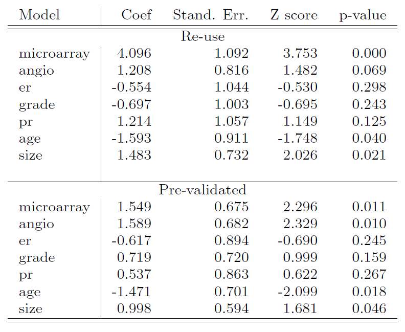
Designed for comparison of adaptively derived predictors to fixed, pre-defined predictors.
The idea is to from a “pre-validated” verson of the adaptive predictor: specifically, a “fairer” verson that hasn’t “seen” the response \(y\).
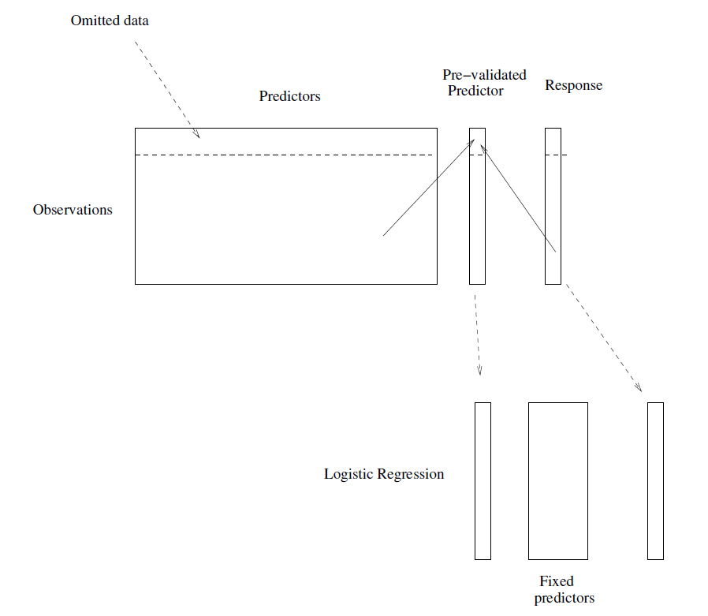
Divide the cases up into \(K=13\) equal-sized parts of 6 cases each.
Set aside one of parts. Using only the data from the other 12 parts, select the features having absolute correlation at least 0.3 with the class labels, and form a nearest centroid classification rule.
Use the rule to predict the class labels for the 13th part.
Do steps 2 and 3 for each of the 13 parts, yielding a “pre-validated” microarray predictor \(\tilde{z}_i\) for each of the 78 cases.
Fit a logistic regression model to the pre-validated microarray predictor and the 6 clinical predictors.
Bootstrap versus Permutation tests
- The bootstrap samples from the estimated population, and use the results to estimate standard errors and confidence intervals. -Permutation methods sample from an estimated null distribution for the data, and use this to estimate p-values and False Discovery Rates for hypothesis tests.
- The bootstrap can be used to test a null hypothesis in simple situations.
- For example, if \(\theta=0\) is the null hypothesis, we chect whether the confidence interval for \(\theta\) contains zero.
- Can also adapt the bootstrap to sample from a null distribution (See Efron and Tibshirani book “An Introduction to the Bootstrap” (1993), ch. 16) but there’s no real advantage over permutations.
Example
- Consider the married women labor force attendance.
#if wooldridge not installed
#install.packages("wooldridge", repos = "https://cloud.r-project.org")mroz <- mroz[, c("inlf", "huswage", "educ", "exper", "age", "kidslt6", "kidsge6")] # keep only needed
head(mroz)## inlf huswage educ exper age kidslt6 kidsge6
## 1 1 4.0288 12 14 32 1 0
## 2 1 8.4416 12 5 30 0 2
## 3 1 3.5807 12 15 35 1 3
## 4 1 3.5417 12 6 34 0 3
## 5 1 10.0000 14 7 31 1 2
## 6 1 6.7106 12 33 54 0 0fit.logit <- glm(inlf ~ huswage + educ + exper + I(exper^2) + age + kidslt6 + kidsge6, data = mroz, family = binomial(link = "logit"))
summary(fit.logit)##
## Call:
## glm(formula = inlf ~ huswage + educ + exper + I(exper^2) + age +
## kidslt6 + kidsge6, family = binomial(link = "logit"), data = mroz)
##
## Deviance Residuals:
## Min 1Q Median 3Q Max
## -2.2086 -0.8990 0.4481 0.8447 2.1953
##
## Coefficients:
## Estimate Std. Error z value Pr(>|z|)
## (Intercept) 0.592500 0.853042 0.695 0.48732
## huswage -0.043803 0.021312 -2.055 0.03985 *
## educ 0.209272 0.042568 4.916 8.83e-07 ***
## exper 0.209668 0.031963 6.560 5.39e-11 ***
## I(exper^2) -0.003181 0.001013 -3.141 0.00168 **
## age -0.091342 0.014460 -6.317 2.67e-10 ***
## kidslt6 -1.431959 0.202233 -7.081 1.43e-12 ***
## kidsge6 0.047089 0.074284 0.634 0.52614
## ---
## Signif. codes: 0 '***' 0.001 '**' 0.01 '*' 0.05 '.' 0.1 ' ' 1
##
## (Dispersion parameter for binomial family taken to be 1)
##
## Null deviance: 1029.75 on 752 degrees of freedom
## Residual deviance: 805.85 on 745 degrees of freedom
## AIC: 821.85
##
## Number of Fisher Scoring iterations: 4nboot <- 1000 # n of bootstrap samples
coefm <- matrix(nrow = nboot, ncol = length(coef(fit.logit))) # matrix for bootstrap slope coefficients
colnames(coefm) <- names(coef(fit.logit))
for (b in 1:nboot) {
bsample <- sample(nrow(mroz), size = nrow(mroz), replace = TRUE) # bootstrap sample
coefm[b, ] <- coef(glm(inlf ~ huswage + educ + exper + I(exper^2) + age + kidslt6 + kidsge6,
family = binomial(link = "logit"), data = mroz, subset = bsample))
} # end of for i
round(head(coefm), digits = 3) # a few first bootsrap estimates of the coefficients## (Intercept) huswage educ exper I(exper^2) age kidslt6 kidsge6
## [1,] -0.153 -0.057 0.242 0.249 -0.004 -0.089 -1.644 0.145
## [2,] -0.857 -0.061 0.233 0.218 -0.003 -0.067 -1.261 0.112
## [3,] 0.757 -0.053 0.196 0.181 -0.003 -0.087 -1.505 0.145
## [4,] 0.940 -0.066 0.238 0.218 -0.003 -0.109 -1.558 0.127
## [5,] 1.595 -0.060 0.211 0.249 -0.005 -0.117 -1.683 0.042
## [6,] 1.577 -0.059 0.234 0.165 -0.001 -0.114 -1.391 0.037##
## bootstrab satandard error esimates
se.boot <- apply(X = coefm, MARGIN = 2, FUN = sd)
round(se.boot, digits = 3)## (Intercept) huswage educ exper I(exper^2) age
## 0.903 0.023 0.045 0.033 0.001 0.015
## kidslt6 kidsge6
## 0.205 0.081round(cbind(coef(summary(fit.logit))[, c(1, 2)], se.boot), digits = 3) # original and bootstap s.e## Estimate Std. Error se.boot
## (Intercept) 0.592 0.853 0.903
## huswage -0.044 0.021 0.023
## educ 0.209 0.043 0.045
## exper 0.210 0.032 0.033
## I(exper^2) -0.003 0.001 0.001
## age -0.091 0.014 0.015
## kidslt6 -1.432 0.202 0.205
## kidsge6 0.047 0.074 0.081##
## boot backages includes advance bootstrapping procedures based on the book:
## Davison, A.C and D.V. Hinkley (1997). Bootstrap Methods and Their Applications.
## Cambridge Univesity Press.
## web: http://statwww.epfl.ch/davison/BMA/
##
##
library(boot) # boot package
##
#help(boot) # for help
##
## the function to be called is boot() of which the three key arguments are
## data, indluding the original sample (above the mroz data frame
## statistic, the statistic to be bootstrapped (abvove the coefficient vetor)
## R, the numebr of repliactions (above 100)
##
## To replicate the above bootstrap example with boot we need to define
## for statistic an appropriate funciton
##
coef.fn <- function(data, index){ # data will include data and index the sampled rows set by boot
return(coef(glm(inlf ~ huswage + educ + exper + I(exper^2) + age + kidslt6 + kidsge6,
data = data, family = binomial(link = "logit"), subset = index)))
}
b <- boot(data = mroz, statistic = coef.fn, R = 1000) # bootstrap object
str(b) # structure of the b object## List of 11
## $ t0 : Named num [1:8] 0.5925 -0.0438 0.20927 0.20967 -0.00318 ...
## ..- attr(*, "names")= chr [1:8] "(Intercept)" "huswage" "educ" "exper" ...
## $ t : num [1:1000, 1:8] 0.189 0.671 0.127 1.42 0.234 ...
## $ R : num 1000
## $ data :'data.frame': 753 obs. of 7 variables:
## ..$ inlf : int [1:753] 1 1 1 1 1 1 1 1 1 1 ...
## ..$ huswage: num [1:753] 4.03 8.44 3.58 3.54 10 ...
## ..$ educ : int [1:753] 12 12 12 12 14 12 16 12 12 12 ...
## ..$ exper : int [1:753] 14 5 15 6 7 33 11 35 24 21 ...
## ..$ age : int [1:753] 32 30 35 34 31 54 37 54 48 39 ...
## ..$ kidslt6: int [1:753] 1 0 1 0 1 0 0 0 0 0 ...
## ..$ kidsge6: int [1:753] 0 2 3 3 2 0 2 0 2 2 ...
## $ seed : int [1:626] 10403 323 -185828344 -1690977408 2063634284 2126413505 1457180909 1464198481 1352935467 1433208526 ...
## $ statistic:function (data, index)
## ..- attr(*, "srcref")= 'srcref' int [1:8] 43 12 46 5 12 5 43 46
## .. ..- attr(*, "srcfile")=Classes 'srcfilecopy', 'srcfile' <environment: 0x0000000014d5b998>
## $ sim : chr "ordinary"
## $ call : language boot(data = mroz, statistic = coef.fn, R = 1000)
## $ stype : chr "i"
## $ strata : num [1:753] 1 1 1 1 1 1 1 1 1 1 ...
## $ weights : num [1:753] 0.00133 0.00133 0.00133 0.00133 0.00133 ...
## - attr(*, "class")= chr "boot"
## - attr(*, "boot_type")= chr "boot"head(b$t) # six first lines of the bootstrapped coefficients## [,1] [,2] [,3] [,4] [,5] [,6]
## [1,] 0.1887090 -0.02365513 0.2372744 0.1914703 -0.003236789 -0.08717578
## [2,] 0.6705535 -0.06306132 0.2485857 0.2195537 -0.002233515 -0.10961670
## [3,] 0.1271517 -0.05613699 0.2842374 0.1544412 -0.001611106 -0.08879443
## [4,] 1.4197738 -0.06222460 0.1565783 0.1814791 -0.002397134 -0.08888121
## [5,] 0.2340466 -0.02962024 0.1907106 0.2081037 -0.003297360 -0.08539290
## [6,] 0.5556055 -0.03951345 0.1589620 0.1926016 -0.002483546 -0.07537368
## [,7] [,8]
## [1,] -1.176191 -0.03535283
## [2,] -1.522841 0.16300002
## [3,] -1.618449 0.02880192
## [4,] -1.608595 0.08704198
## [5,] -1.327913 0.09914998
## [6,] -1.278560 0.06837032se.boot2 <- apply(X = b$t, MARGIN = 2, FUN = sd) # bootstrap standard errors
round(cbind(coef(summary(fit.logit))[, c(1, 2)], se.boot2), digits = 3) # original and bootstap s.e## Estimate Std. Error se.boot2
## (Intercept) 0.592 0.853 0.853
## huswage -0.044 0.021 0.022
## educ 0.209 0.043 0.045
## exper 0.210 0.032 0.033
## I(exper^2) -0.003 0.001 0.001
## age -0.091 0.014 0.014
## kidslt6 -1.432 0.202 0.213
## kidsge6 0.047 0.074 0.080- Here we observe that there are no big differences between the bootstrapped standard errors and the original ones.
Remark
Because of the sampling with replacement some observations do not enter into a particular bootstrap sample and some observations appear multiple times.
When the response variable is a dichotomous variable (0/1) like in the above example, there is always a possibility to get a bootstrap sample where all response values are the same (either 0 or 1), in which case estimation fails and it may crash the whole bootstrap sampling.
There are special designed bootstrap procedures to avoid these situation (one simple procedure is to simply discard those samples).
With \(n\) observations, there are
\[ {\left( \begin{matrix} 2n-1 \\ n \\ \end{matrix} \right)} \]
different bootstrap samples.